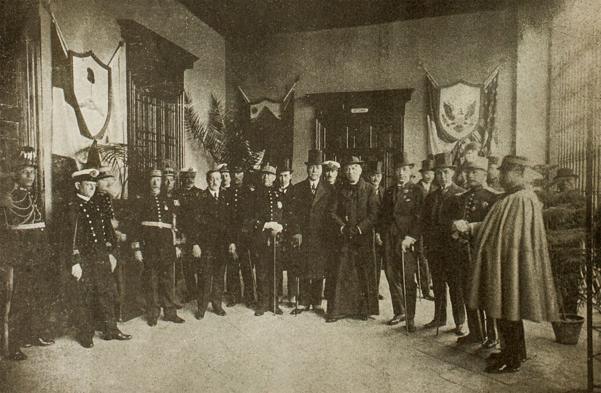
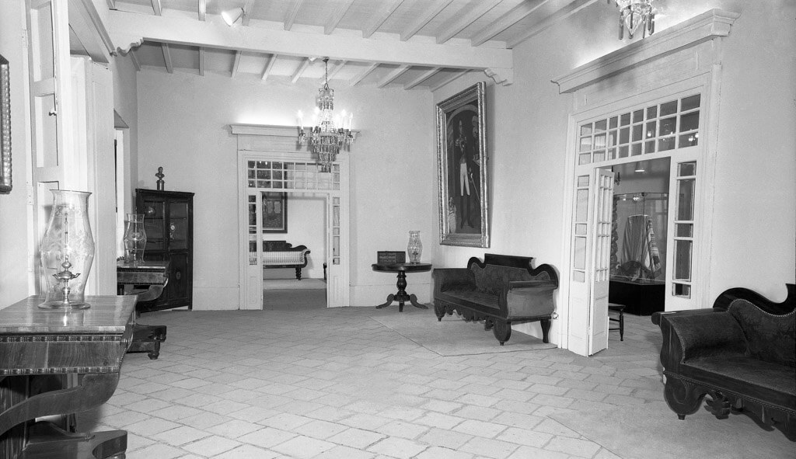
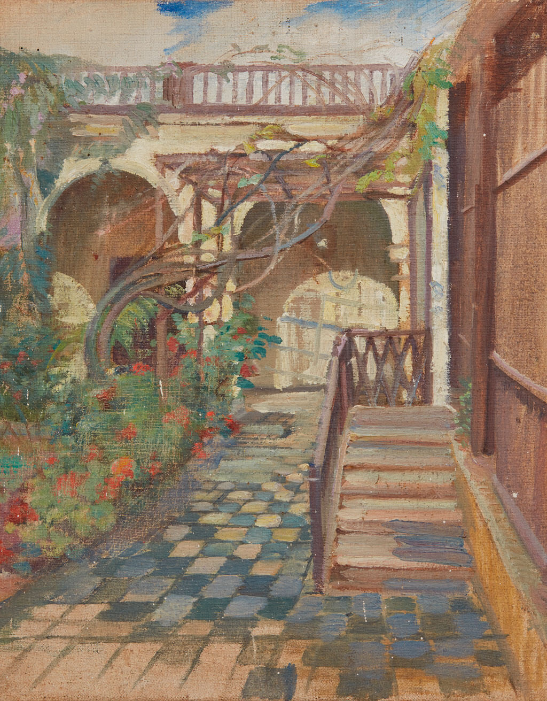
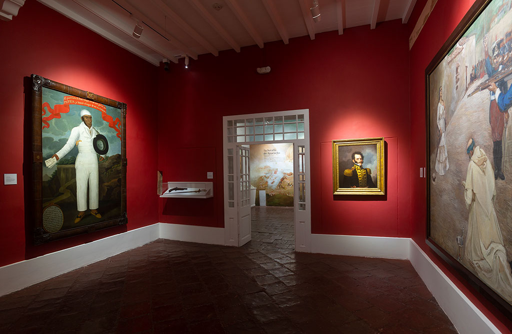
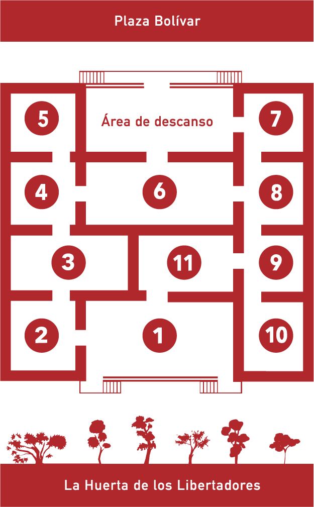

Bienvenidos a la Sala Independencia
La Quinta de los Libertadores, símbolo arquitectónico del bicentenario, es el espacio que alberga la Sala Independencia. Su historia se une a la de nuestro país cuando el penúltimo virrey en el Perú, Joaquín de la Pezuela, la adquiere en 1818 y la convierte en su residencia. El proceso libertario crece, gana fuerza y de la Pezuela es destituido años después. Es así como José de San Martín y Simón Bolívar, en distintos momentos, eligen también esta casona como su residencia, y la transforman en memoria tangible de su paso por nuestro país y nuestra historia. De allí, su nombre actual y trascendencia.
Los invitamos a recorrer las once áreas de la Sala Independencia. En ellas, conoceremos los pasos que dimos para alcanzar nuestra libertad, las batallas que libramos, así como nuestra primera Constitución y nuestros símbolos patrios. Caminemos juntos y recordemos cómo el Perú logró convertirse en una república.
Podrán disfrutar todos los contenidos en español, quechua e inglés.
La historia tras la Quinta de los Libertadores
-
1818
El virrey Joaquín de la Pezuela adquiere la casona como lugar de reposo en un predio que perteneció a los frailes del convento de San Juan de Dios, de Ica. Pezuela se retiró tras ser depuesto por José de la Serna.
-
1821 - 1822
José de San Martín elige la casona como residencia de reposo durante su permanencia en Perú.

-
1823 - 1826
Simón Bolívar se instala en la quinta hasta su retorno a Venezuela.
-
1858
La casona es devuelta a los herederos del virrey Pezuela. Un año después, la venden a Mariana Pardo y Aliaga y al cabo de un tiempo es adquirida por Ana Arias de Montani, quien divide y vende en lotes la propiedad, pero conserva la casona.
-
1881
La Quinta fue sede del gobierno provisorio de Francisco García Calderón en tiempos de la Guerra del Pacífico.
-
1921
El presidente Augusto B. Leguía expropia la casona virreinal y la destina a albergar el Museo Bolivariano, inaugurado como parte de las celebraciones del primer centenario de la independencia.
 -
1922
El Estado peruano adquiere la zona de la huerta como parte del patrimonio histórico de la Quinta.
-
1971
La comisión para la celebración por los 150 años de la independencia emprende la restauración y ampliación de varios ambientes del Museo Nacional de Historia y del Museo Nacional de Arqueología y Antropología.
 -
1972
La casona es declarada Monumento Histórico Nacional.
-
1992
El Museo Nacional de Arqueología y Antropología se fusiona con el Museo Nacional de Historia en el Museo Nacional de Arqueología, Antropología e Historia del Perú (MNAAHP).
 -
2002
El gobierno venezolano hace un aporte para la refacción de la Quinta de los Libertadores.
-
2014 - 2015
Se renueva la exhibición museográfica de la Quinta de los Libertadores.
-
2021
La Quinta de los Libertadores y la Huerta fueron renovadas en el marco de las celebraciones del Bicentenario de la Independencia del Perú.

La Quinta
de los Libertadores
Sala Independencia
- Independencia: proceso e ideas
- Implosión española y juntas de gobierno
- Las rebeliones peruanas
- Los primeros esfuerzos militares del Perú
- José de San Martín
- La guerra y las proclamaciones
- Simón Bolivar
- La campaña final
- La república auroral
- La iglesia en la independencia
- La vida cotidiana en la independencia
- La Huerta de los Libertadores
o selecciona la sala deseada
- 
- Independencia: proceso e ideas
- Implosión española y juntas de gobierno
- Las rebeliones peruanas
- Los primeros esfuerzos militares del Perú
- José de San Martín
- La guerra y las proclamaciones
- Simón Bolivar
- La campaña final
- La república auroral
- La iglesia en la independencia
- La vida cotidiana en la independencia
- La Huerta de los Libertadores